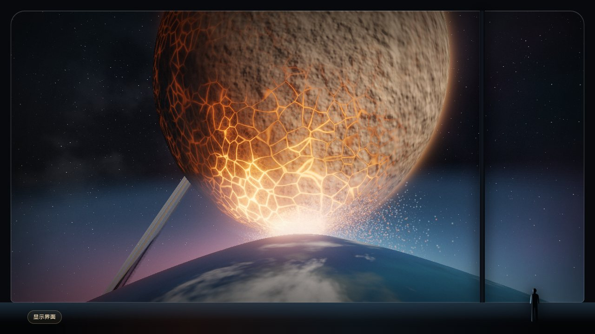

ROCHE LIMIT / OBSERVATION NOTES
引力之间，
物质开始迁徙。
一片超出视野的星云，正被远处的红色光核牵引。先记录这场缓慢的迁徙，再用一个可调的洛希瓣模型，理解引力与旋转如何划出物质的边界。
影像 / 艺术化演绎图解 / 理想化模型

- 观察主题
- 潮汐与物质转移
- 影像视角
- 全景 / 星云 / 光源
- 模型坐标系
- 双星共转系
- 模型质量比
- 65 : 35
01 / VISUAL RECORD
沿着光丝，读懂这片景象。
A
供给区 · 右侧星云
星体只露出一段轮廓。明暗交错的云层和不连续的细丝占据视野，给出远超观景舱的尺度。
B
转移区 · 弯曲流束
细丝沿弯曲路径向左下方汇聚。切到「星云」近景，观察疏密变化与缓慢旋转的方向。
C
汇入区 · 红色光核
微小的发光点构成视线终点。红色光柱、银河与舱体共同建立画面的方向和远近层次。
影像记录 / 星云、光柱和流动路径为视觉设计；没有为主画面设定可测量的质量或距离。
02 / INTERACTIVE MODEL
物质的边界，在哪里相接？
在随双星一起旋转的坐标系中，临界等势面围成两个泪滴形的洛希瓣，在 L₁ 点相接。 调整下方填充率，观察表面接近这个边界的过程；实际物质如何流过 L₁，还需要流体动力学描述。
- 两星间距
- — 千米
- 互绕周期
- — 小时
- 尖端间距
- — 千米
- 内侧临界等势线 · 两个洛希瓣在 L₁ 相接
- 外侧临界等势线 · 经过 L₂ 或 L₃
- 烛阴 望舒 · 模型表面沿等势面构造
03 / METHOD & SCOPE
让每个读数有据可循。
这里的数值只描述左侧教学模型。它们不会随观景舱转头或播放而变化，也不是对上方艺术化星云的测量。
01 / 有效势
Ω = ½ (u² + w²) + (1 − μ) / rA + μ / rB
引力项与离心项共同决定等势线、洛希瓣和五个拉格朗日点。u、w 为归一化平面坐标，rA、rB 为到两星的距离，μ = 0.35；两星间距取为单位长度。
02 / 距离与时间
虚构星体烛阴占总质量的 65%，望舒占 35%。模型以烛阴等体积半径 6,400 千米换算距离，互绕周期按模型采用的质量和间距计算。
03 / 适用范围
等势面展示双星系统中的边界形状，不求解星云流体、磁场或真实吸积。观景舱的影像时间、倍速与这组物理读数独立。
继续实验 / N 体引力把一颗碎石卫星推过洛希极限 ↗